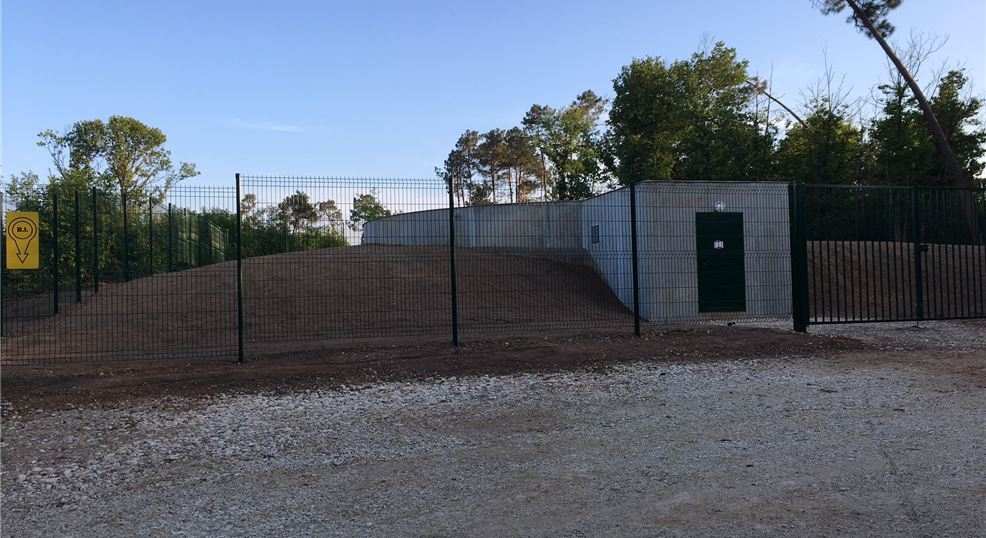
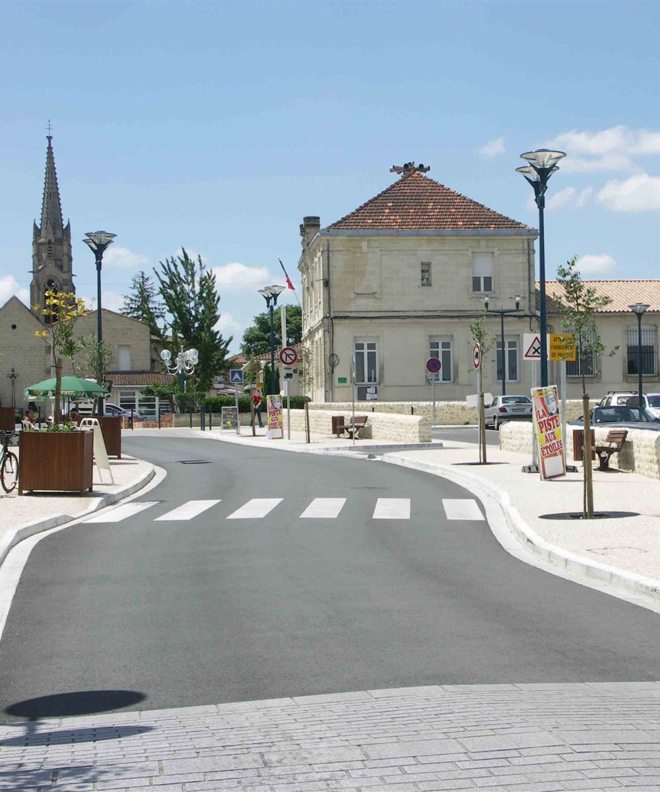
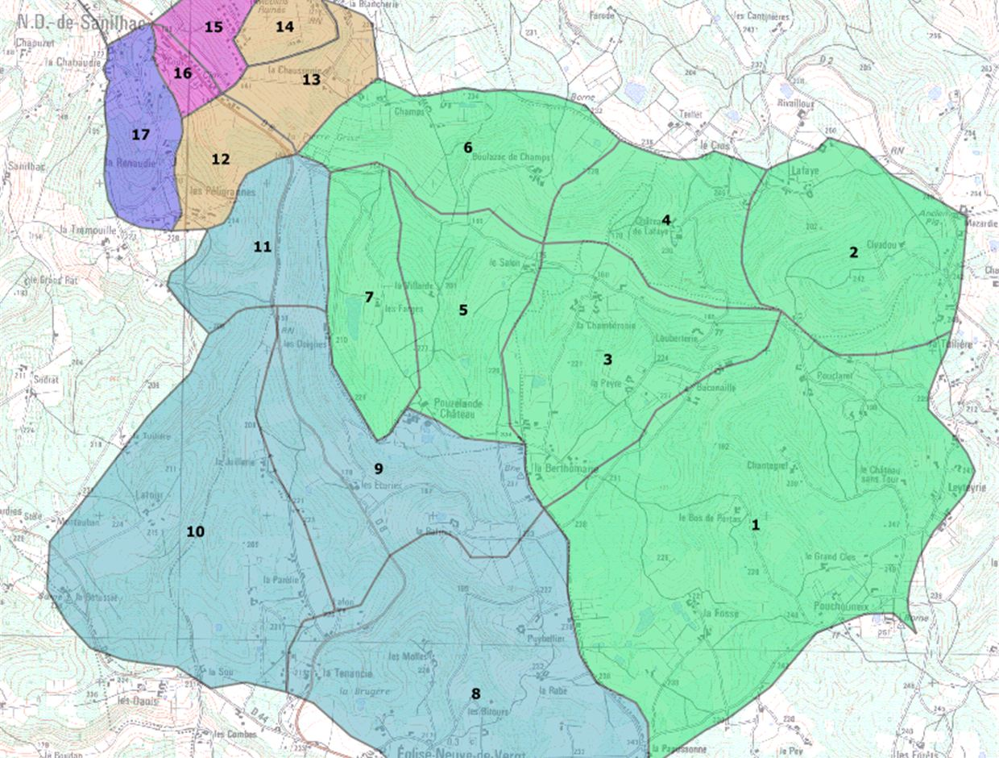
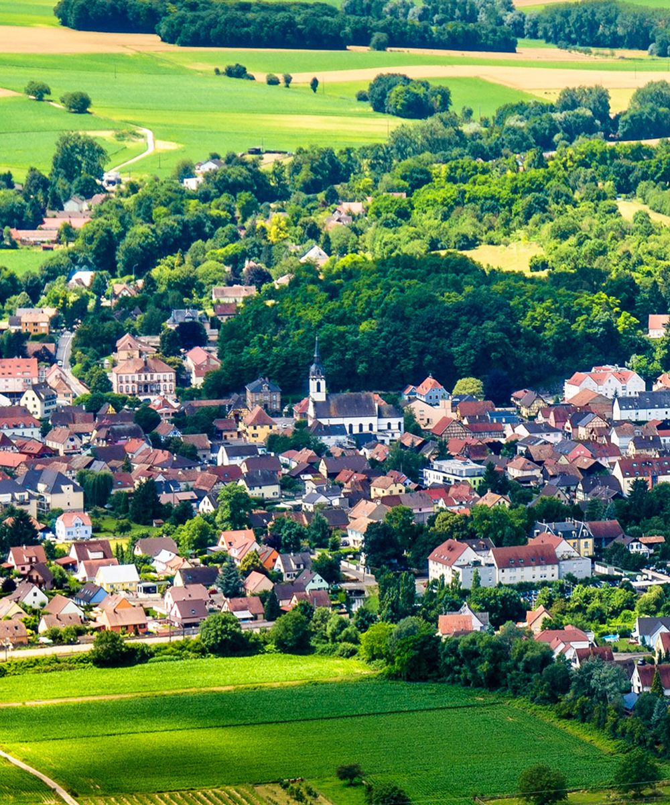
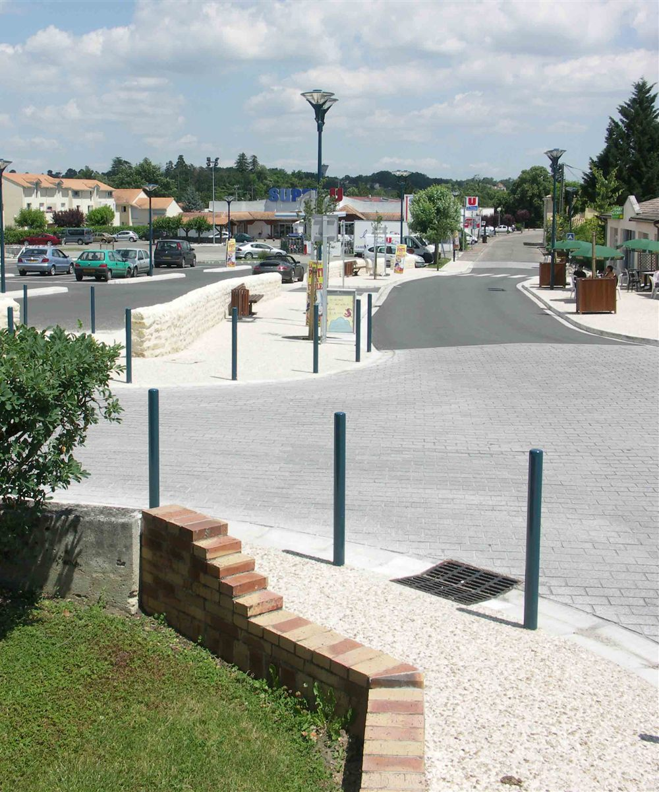
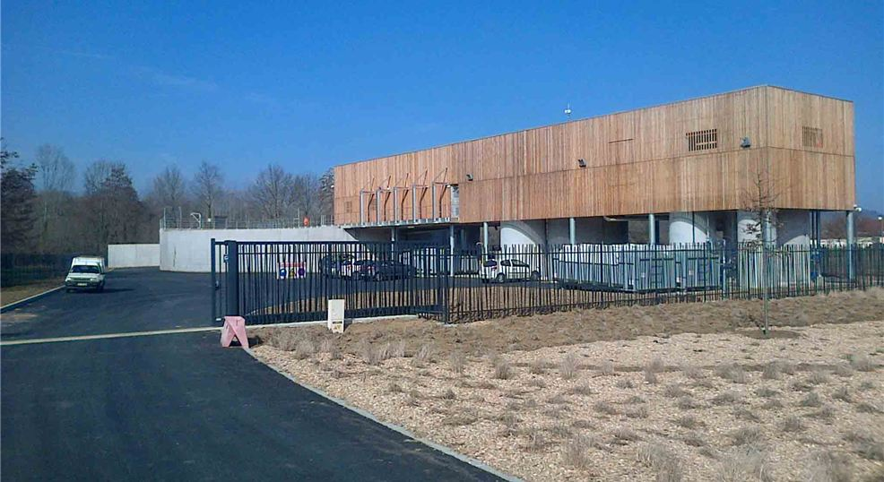
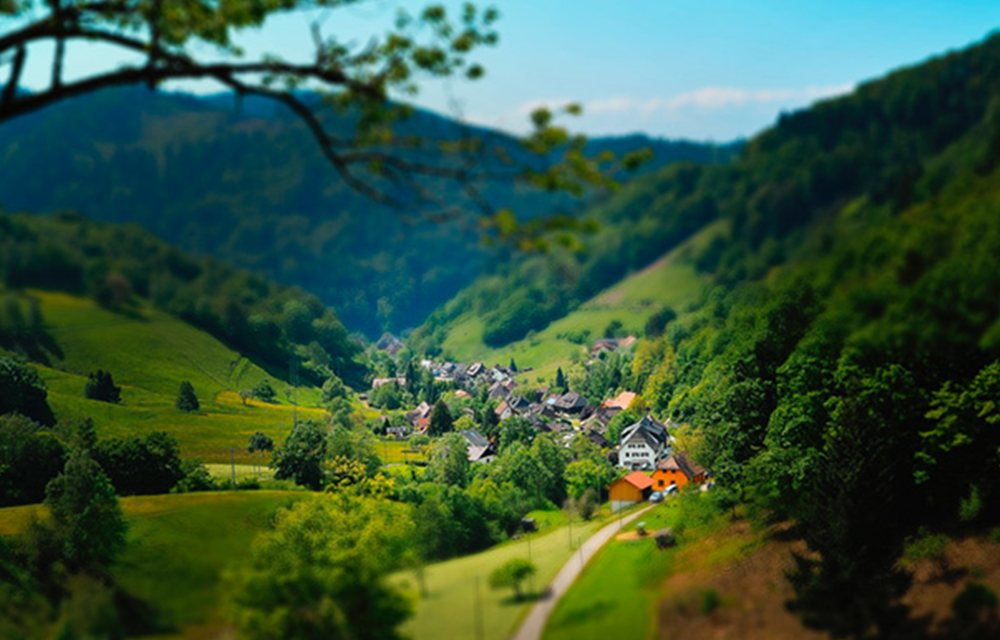
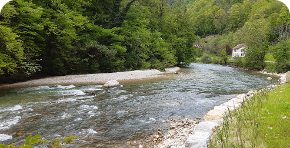

Soca’mag,
nos métiers au fil de l’eau
Chantiers, vie de l’entreprise et dossiers d’expertise : l’actualité de SOCAMA et des territoires que nous accompagnons.
Lire les articles

Tous les articles
12 articles
-

Agence de Marsac-sur-l’Isle : les projets en cours
En Dordogne, réseaux et ouvrages d’eau potable se modernisent avec le soutien de l’Agence de l’eau Adour-Garonne.
-

Sainte-Florine : la rue de Belgique et la place Gigante se transforment
Visite de chantier avec les élus sur l’aménagement de la rue et de la place, en plein cœur de la commune.
-

Continuité écologique : le seuil de Casseuil sur le Dropt
Les travaux de restauration de la continuité écologique du seuil sont achevés, en vidéo.
-

Huit nouvelles qualifications OPQIBI
Ingénierie des rivières et des milieux aquatiques : nos compétences s’élargissent pour mieux vous accompagner.
-

SOCAMA certifiée ISO 14001
Après l’ISO 9001, la certification environnementale pour nos activités de conception et d’ingénierie, dans toutes nos agences.
-

Noailhac : l’église Saint-Pierre-ès-Liens mise en lumière
Un éclairage LED nocturne pour valoriser l’église, après sa restauration.
-
Paysages : SOCAMA complète son offre
Un cabinet de paysagistes rejoint nos équipes : la conception paysagère fait désormais partie de nos métiers.
-

Première pierre de la station d’épuration de Terrasson
Les élus ont posé la première pierre de la future station de traitement des eaux usées.
-

SOCAMA s’agrandit avec EF Études
EF Études devient notre filiale : une vingtaine de collaborateurs et six sites supplémentaires dans l’Ouest.
-

Mesurer pour mieux maîtriser l’impact environnemental des projets
État initial, suivi de chantier, contrôle après travaux : observer le milieu à chaque étape, c’est la meilleure façon de limiter l’empreinte d’un projet.
-

Analyse des milieux et génie écologique
Comprendre un cours d’eau ou une zone humide avant d’agir, puis travailler avec le vivant : c’est le principe du génie écologique.
-

Littoral et estuaires : s’adapter à la montée du niveau de la mer
Le niveau de la mer monte de plus en plus vite. Sur l’estuaire de la Gironde, les ouvrages hydrauliques sont en première ligne.
Suivez-nous sur LinkedIn
Nos actualités, nos chantiers et nos offres d’emploi, au fil de l’eau.